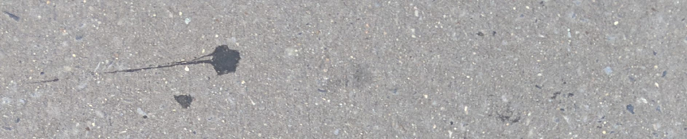
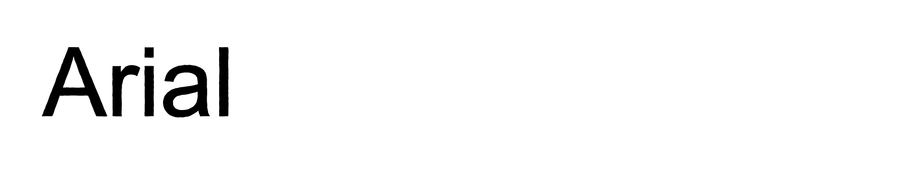
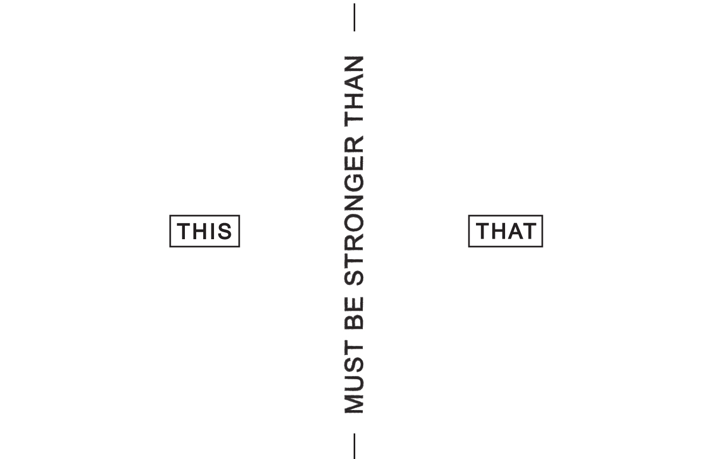

This Must Be Stronger Than That
In a world of increasing hardness and cruelty, what does it mean to live
a life of disciplined spiritual strength?
This Must Be Stronger Than That was an eleven-week sermon series
headed by Jon Tyson at Church of the City New York, inspired by the
rigor and legacy of Dietrich Bonhoeffer's Finkenwalde Seminary.
Each week describes a spiritual discipline as a duality where [this]
must be stronger than [that], and was intended as a grounding call to
action in the midst of a busy New York City congregation.
To facilitate visual expression of the series, I set up a loose system
of rules meant to exphasize a humble grit, grounded in daily practice.
Each duality was expressed in dynamic compositions of hand-drawn type
and referential textures, layered on a rigid core template. Then, as a
final layer of interpretation, each composition was output as a
multi-color risograph print, scanned, and reworked for use in
presentations, static/animated assets for social media usage, and a
custom-coded "facilitator guide" website. To encourage action, I made
700 double-sided riso prints a week as handouts to the congregation,
each with a relevant assignment on the back to encourage application.
「 Duality Compositions 」
Though the word "discipline" conjures up images of restrictive tedium or
ritualistic ascetism, our goal was to show spiritual discipline as
life-giving and accessible practice. I created a "core template" based
on a bifurcation of each composition into "this" on one side and "that"
on the other, then worked with friend and artist Eugene to layer on top
the core template as a raw canvas. The final compositions feature
hand-drawn type, texture, and other illustrative references spanning art
history, theological tradition, and the textures of everyday New York
life.
Each of the final eleven compositions is shown below, with a short
description explaining some of the layered references.
｢ Promise + Possibility of the Church ｣
A visual introduction to the cover template, including some grunge from the writing process, and a heavily filtered photo of sidewalk outside my front door.
｢ Worship / Idolatry ｣
Worship is represented here as a moment of clear connection between God and Man (and a Michaelangelo reference), while idolatry warps this central relationship in distraction and occlusion
｢ Truth / Lies ｣
Blackletter nods to the scriptural roots of western calligraphy, while the puzzle-like overlap between a network of truth and lies emphasizes careful reading— much as the final sermon urged Christians to carefully read and examine Scripture.
｢ Rest / Exhaustion ｣
We illustrated rest here as a comfortable, organize haze, while exhuastion is shown as a sharp and granular over-extension—what Tolkien describes in the Hobbit as "too little butter spread over too much bread."

｢ Hunger / Apathy ｣
An art history reference connecting notions of Spiritual Hunger and Apathy with Warhol's celebration of something mass-production and pass-consumption. One can is taken out of the array to create a sense of disordered longing, and nod to the rooting spiritual practice of fasting.
｢ Commitment /
Preference ｣
True commitment recognizes one's role in what can be considered a celestial network, while preference inflates the self to a singular mass around which the universe revolves.

｢ Forgiveness /
Bitterness ｣
A nod to Christopher Wool's word paintings, contrasting an ungainly and form-defying bitterness with a more legible forgiveness

｢ Celebration /
Cynicism ｣
Celebration is portrayed through bright colors and Keith Haring-like line work, while Cynicism hovers as a dark cloud blotting over a bright yellow solid

｢ Grieving /
Dismissing ｣
While grieving sees the proper placement and processing of suffering, dismissing displaces it.
｢ Hospitality / Fear ｣
I tried to contrast two contrasting textures: Hospitality through the comfort of a towel, Fear through the texture of coiled barbed wire
｢ Love / Hate ｣
I composed Love/Hate as if it was a protest sign—carefully hand-drawn, but still bold and clear.
｢ Secrecy / Applause ｣
While secrecy has been compared to a well-maintained garden, applause feels maze-like and undirected, uncentered in its seeking of human recognition.

《 Process / Other Deliverables 》
Each week, I worked with close friend/collaborator Eugene Kim to create
lettering, texture, and drawn assets that would inform the week's
composition. I would manipulate scans and photos of these originals into
final form, then print/translate each through a risograph printer, which
lent a natural analog noise and bright colors to the final output.
Since Risograph allows out-of-gamut colors like fluorescent pinks and
yellows, the compositions were eye catching if nothing else, but also
fresh in a visual environment of browns and black/white photos common to
Church of the City New York. I got a kick of watching one kid examine
his handout for about 10 minutes, rubbing the ink as he tried to figure
out how it was printed.
To support individual discipline, Each week's content ended with a call
to practice, printed for later review on the back of paper handouts.
Each handout included (on one side) the cover slide for the week, (on
the other) a weekly prompt for individual application, and space for
notes. I printed 700 copies each week as double-sided, two-color prints
at SVA's RisoLab on 3-up, Tabloid sheets. Final cards were cut to size
by guillotine in 12 batches, to account for the natural creep of the
Risograph printer.
A weekly slide, social media assets, and an animated bumper were based
on a scan of these weekly handouts, which I would resize for final use
or sample and animate in After Effects.
I also created a custom Facilitator's guide website for this series,
which would host questions, suggested activities, and further resources
for the various discussion groups throughout the church's community. The
website was built off a Cargo site with custom-injected css and html. I
worked with Laura Cave, Jon Tyson, and Suzy Rojas to generate, maintain,
and update the site on a weekly basis
visit the site here or view
the iframe below.
《 Concept 》
The series was inspired by a conversation theologian Bonhoeffer had with
a friend worried about the intensity of his seminary's emphasis
spiritual practice. Bonhoeffer rowed his friend across a river to
contrast their small seminary to the training grounds of the Nazi air
force close by. He then spoke … "of a new generation of Germans in
training, whose discipline [was being formed] 'for a kingdom … of
hardness and cruelty.' It would be necessary, he explained, to propose a
superior discipline if the Nazis were to be defeated." This (the
seminary) would have to be stronger that That (The Nazis)


Based off this context, I saw the series as discipline-focused call to
action, inspired by a dark historical moment. It would need to be
grounded in historicity, urgency, and placed in an immediate, modern
context. The challenge would be to create a visual system that captured
all this in a grit injected in daily life; to show discipline not just
as a concept—but in situ, propelled by consistent urgency.
In this interest, I developed two guiding design principles:
☞ Grit/Grounding in layered texture—creating a sense of
history, and gesturing towards everyday, down-to-earth action.
☞ Humility through low-fidelity design choices. The end
visual would be beautiful and weathered in devotion, yet accessibel and
transparent in method of creation—not filtered through exclusive
programs and intellect
These principles informed four strong visual elements:
☞ Sidewalk as "ground" Each asset was textured using a
photo of the sidewalk outside my door. This allows the designs for a
modern, New-York based church to be informed by the literal backdrop and
recorded history of New York's gum-stained concrete.

☞ Handwriting as typeface as an accessible, expressive, and
low-fidelity method of communicating abstract concepts like
"Hospitality" or "Hate."
☞ Any Everyday Typeface (Arial) enforcing ease and humility
of form

☞ A rigid cover template that allowed for free expression,
but accessible consistency week-to-week.

This is honestly the short version. For more on the concept and what
inspiration I drew from, read the longform in my pitch deck
here.
《 Closing Thoughts 》
Doing anything of this scale for a sustained 11 weeks turned out to be a
larger undertaking than I thought. The original system was
well-researched and conceptually grounded, but rather quickly thrown
together with less visual development than I would have preferred. All
told, in coordinating originals, scanning and compositing, splitting
colors (risograph requires black and white files like a screenprint),
printing, cutting, scanning, updating, and animating… this amounted to
at least 11 hours of work a week. I still find it a miracle that I
managed to juggle all this without losing freshness or cogency.
That said, it wasn't always the best feeling to see it end in 30 seconds
of projection and handouts discarded on the ground.
But in smaller ways, feedback from the church was effusive. Many
community group leaders lauded the website as an essential, functional
resource for running weekly meetings. Some friends collected bulletins
and bugged me for extras when they missed weeks. Others pointed out the
art history references on instagram. Perhaps best of all, the series
served as a sort of beacon for different designers and artists who it
felt like came out of the woodwork, curious to learn more about the
process and intent.
In the end, the greatest surprise was the resonance of such an abstract
visual system to with a diverse, 700-person audience spread across New
York City. Watching a kid observe my prints so carefully gave me hope
that the impact was more than flashy colors.